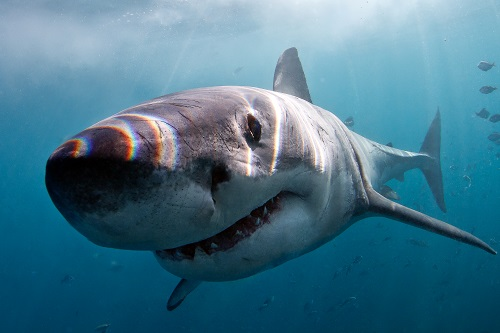

Marine Life
Shark/Ray
great white shark
What are Great White Sharks?
The great white shark is a species of large mackerel shark that can be found on the surface waters of all major oceans.
They are well known for their large sizing between 4.6 and 6 meters long.
The great white shark is known to have a variety of prays including fish, other sharks and sea birds.
They have a torpedo-shaped body allowing them to cruise in waters really well and be able to speed up when hunting.
They have an acute sense of smell and can sense electric fields through their snout.